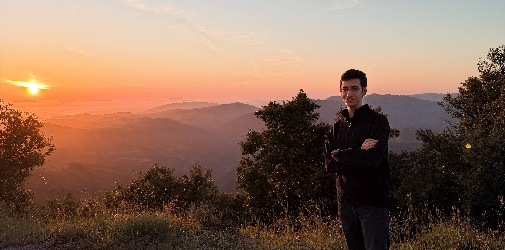

About

A quick pronunciation guide to my name: it is pronounced as Uh - Ree - Yan.
 I am a third-year undergraduate studying astrophysics at the beautiful campus of the
University of California, Santa Cruz,
drawn to the question of how galaxies grow, what drives their evolution, and the role that supermassive black holes play in that story. My experience in doing astrophysics research spans a wide variety of topics, ranging from theory-based simulations of atmospheric escape in exoplanets to analyzing observational data to understand quenching in galaxies. Moving across these subfields has allowed me to approach problems from multiple angles, pulling tools and perspectives from across astrophysics.
I am a third-year undergraduate studying astrophysics at the beautiful campus of the
University of California, Santa Cruz,
drawn to the question of how galaxies grow, what drives their evolution, and the role that supermassive black holes play in that story. My experience in doing astrophysics research spans a wide variety of topics, ranging from theory-based simulations of atmospheric escape in exoplanets to analyzing observational data to understand quenching in galaxies. Moving across these subfields has allowed me to approach problems from multiple angles, pulling tools and perspectives from across astrophysics.
I grew up in the beautiful city of Esfahan, Iran, a city of bridges, art, and an immense level of hospitality. There are many misconceptions about Iran that are shaped by politics, but honestly, Iranians are some of the warmest and most generous people I know. Esfahan is worth seeing for yourself.
Quick Facts
- BornEsfahan, Iran
- Based inSanta Cruz, CA
- StudyingAstrophysics, UCSC
- FocusGalaxy evolution & SMBHs
- Also exploredExoplanet atmospheres
- Role modelsVera Rubin, Carl Sagan
- Favorite telescopeKeck Observatory
- LanguagesFarsi, English
- Outside the labHiking, photography
- Currently readingCosmos — Carl Sagan
- Coffee or teaCoffee, always
- Fun factNamed after Ariana constellation lore